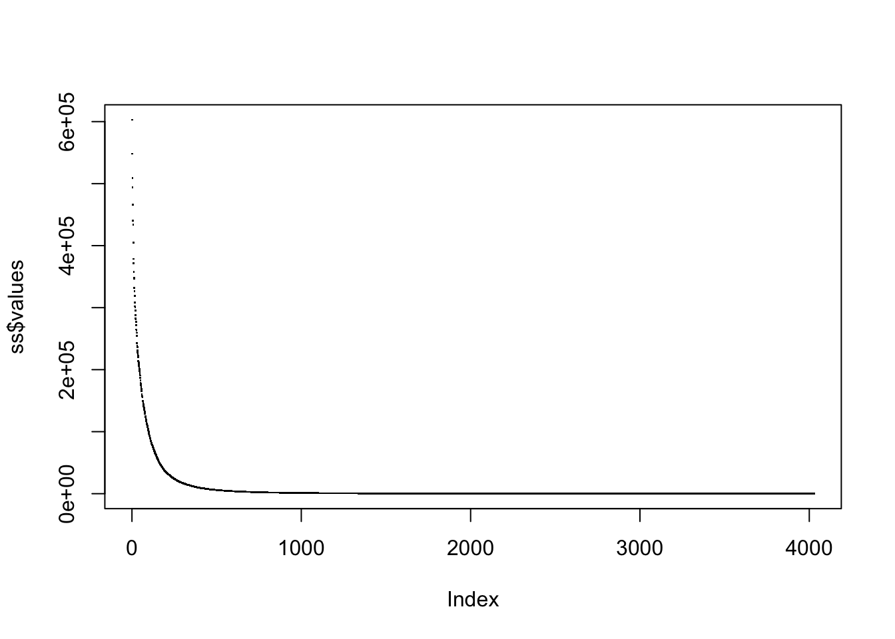
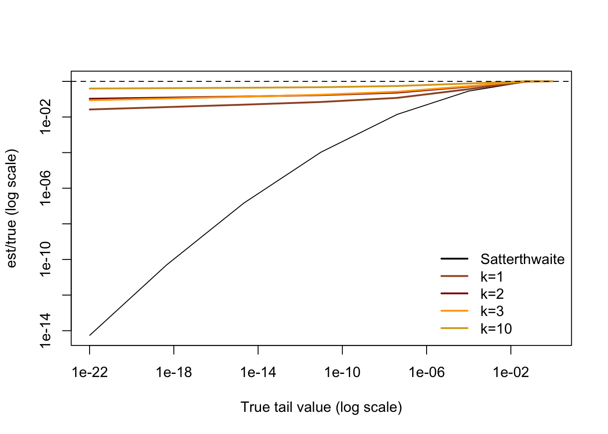
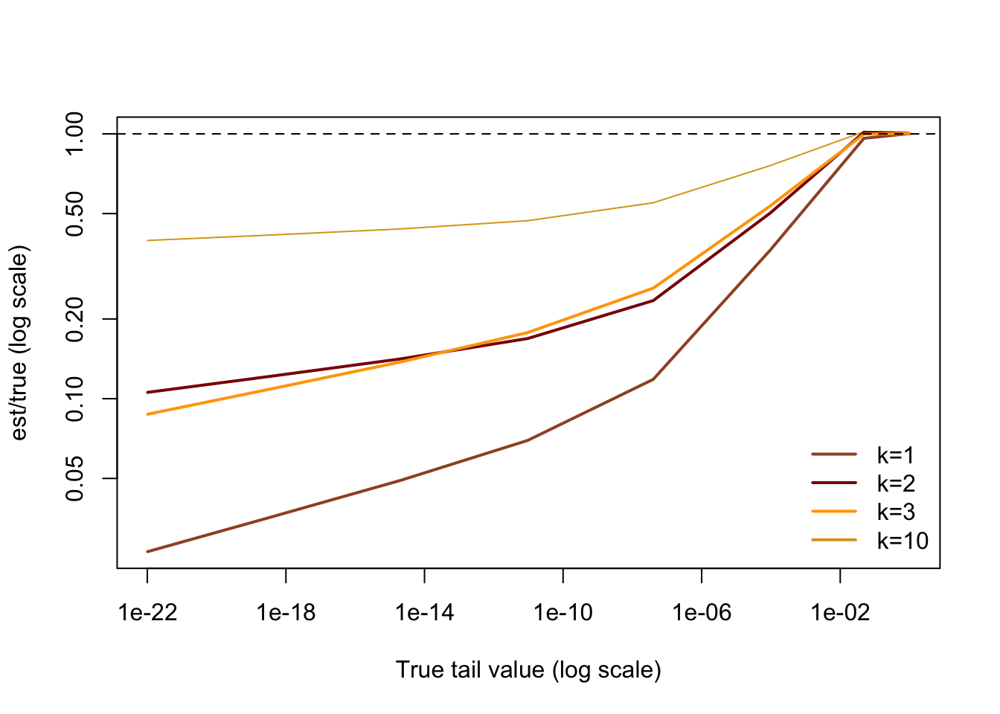

A quadratic form in \(n\) Gaussian variables is \(Z^TAZ\) where \(Z\sim N(0,B)\) is a Normal \(n\)-vector and \(A\) is an \(n\times n\) matrix. It has the distribution \(Q=\sum_i^n \lambda_i \chi^2_1\) where \(\lambda_i\) are the eigenvalues of \(AB\) in decreasing order. If \(n\) is large, this is a bit annoying to work out, so we approximate it by \[\sum_{i=1}^k \lambda_i\chi^2_1+a_k\chi^2_{d_k}\] with \[a_k=\frac{\sum_{i=k+1}^n\lambda_i^2}{\sum_{i=k+1}^n\lambda_i}\] and \[d_k=\frac{\left(\sum_{i=k+1}^n\lambda_i\right)^2}{\sum_{i=k+1}^n\lambda_i^2}.\]
When \(k=0\) this is the traditional Satterthwaite approximation, which isn’t at all bad over the middle of the distribution but falls apart in the tails; it is exponentially too small for small tail probabilities.
Importantly, the leading eigenvalue approximation doesn’t require knowing all the eigenvalues, only \(\lambda_1,\dots,\lambda_k\) and the two sums for the remainder. The time complexity for computing it is the time for \(k\) multiplications by \(AB\) plus \(O(n^2)\) for the remainder, significantly faster than the \(O(n^3)\) needed either for the full eigendecomposition or for any higher moments of the eigenvalues.
So, how good is it? When I studied it before, we were interested in taking \(k=100\) or so to speed up multi-SNP tests in genome-wide association studies1. We didn’t bother looking at small values of \(k\) once the computations were fast enough.
In fact, the approximation does really well even for very small \(k\). In contrast to the Satterthwaite approximation, it has bounded relative error even for \(k=1\), and the error improves as \(k\) increases.
Here’s an example
In the package bigQF there’s synthetic genome sequence sequence data for 5000 individuals at 4028 positions
The eigenvalues for the weighted genetic covariance matrix used in one of the popular tests look like
library(bigQF)
data(sequence)
G<-sequence
wuweights<-function(maf) dbeta(maf,1,25)
tmp<-wuweights(colMeans(G)/2)*t(G)
tildeGt<-t(tmp-rowMeans(tmp))/sqrt(2)
H<-crossprod(tildeGt)
ss<-eigen(H, symmetric=TRUE, only.values=TRUE)
plot(ss$values, pch=".")
As a ‘true’ value, we’ll use \(k=500\)
pQF(seq(1,10,length=10)*1e7, H, n=500, conv="sad")->x500the sad argument means to use the saddlepoint approximation to do the convolutions; this is necessary if the tail probabilities are not much larger than machine epsilon.
Now, compute the approximation for \(k=1,2,3,10\)
pQF(seq(1,10,length=10)*1e7, H, n=1, conv="sad")->x1
pQF(seq(1,10,length=10)*1e7, H, n=2, conv="sad")->x2
pQF(seq(1,10,length=10)*1e7, H, n=3, conv="sad")->x3
pQF(seq(1,10,length=10)*1e7, H, n=10, conv="sad")->x10and the Satterthwaite approximation
pQF(seq(1,10,length=10)*1e7, H, n=1, method="satt")->x0And now plot them:
plot(x500,x0/x500,log="xy",type="l",ylim=range(x0/x500,x3/x500),xlab="True tail value (log scale)",ylab="est/true (log scale)")
lines(x500,x1/x500,col="sienna",lwd=2,type="l")
lines(x500,x2/x500,col="darkred",lwd=2,type="l")
lines(x500,x3/x500,col="orange",lwd=2,type="l")
lines(x500,x10/x500,col="goldenrod",lwd=2,type="l")
abline(h=1,lty=2)
legend("bottomright",bty="n",lwd=2, col=c("black","sienna","darkred","orange","goldenrod"),legend=c("Satterthwaite","k=1","k=2","k=3","k=10"))
To see better, we can drop the Satterthwaite approximation and zoom in
plot(x500,x10/x500,log="xy",type="l",ylim=range(x1/x500),xlab="True tail value (log scale)",ylab="est/true (log scale)",col="goldenrod")
lines(x500,x1/x500,col="sienna",lwd=2,type="l")
lines(x500,x2/x500,col="darkred",lwd=2,type="l")
lines(x500,x3/x500,col="orange",lwd=2,type="l")
abline(h=1,lty=2)
legend("bottomright",bty="n",lwd=2, col=c("sienna","darkred","orange","goldenrod"),legend=c("k=1","k=2","k=3","k=10"))
Basically, the behaviour of the extreme tail is controlled by the first eigenvalue and the behaviour in the middle of the distribution is well-described by the Satterthwaite approximation. Putting them together gives reasonably good behaviour everywhere.
a setting where the null hypothesis of (essentially) zero association actually makes sense↩︎